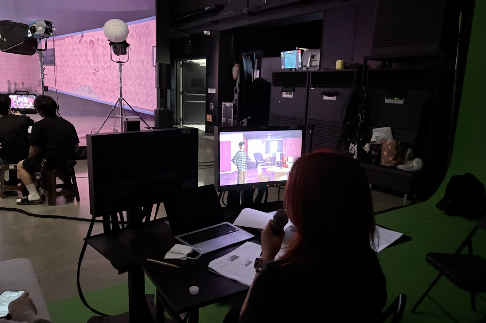
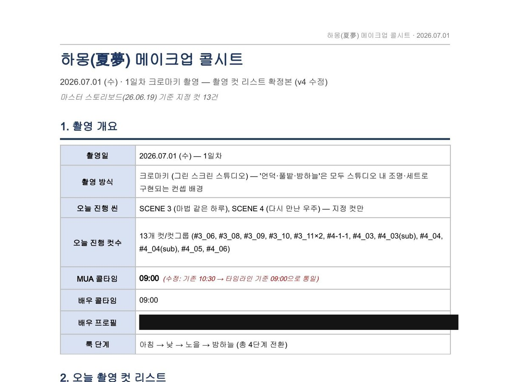
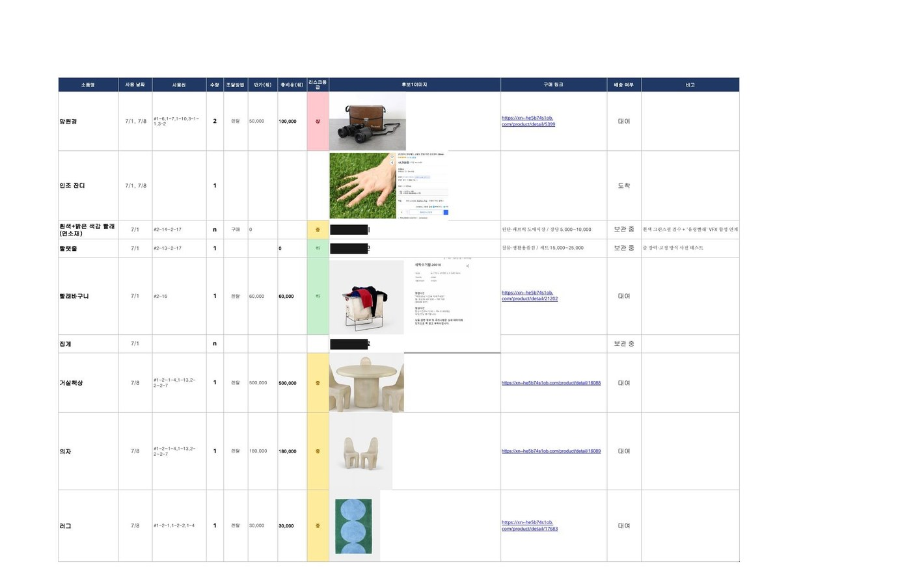
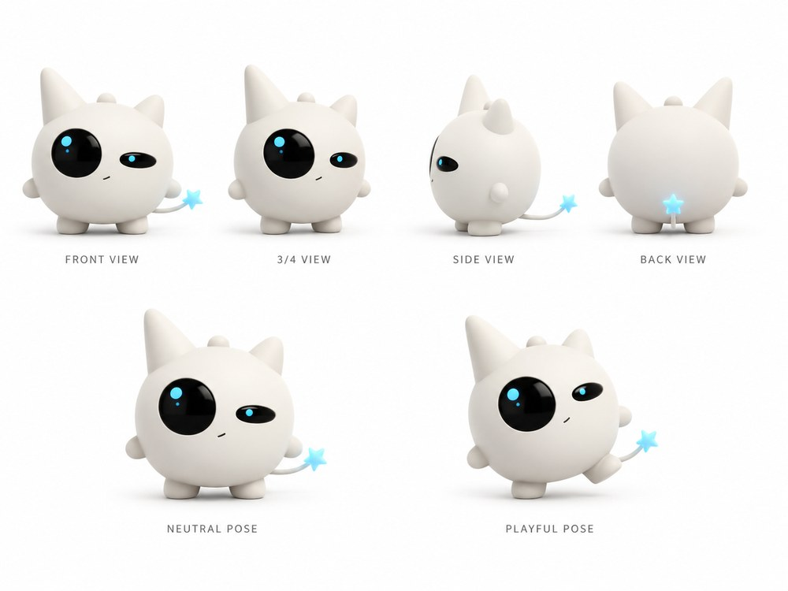
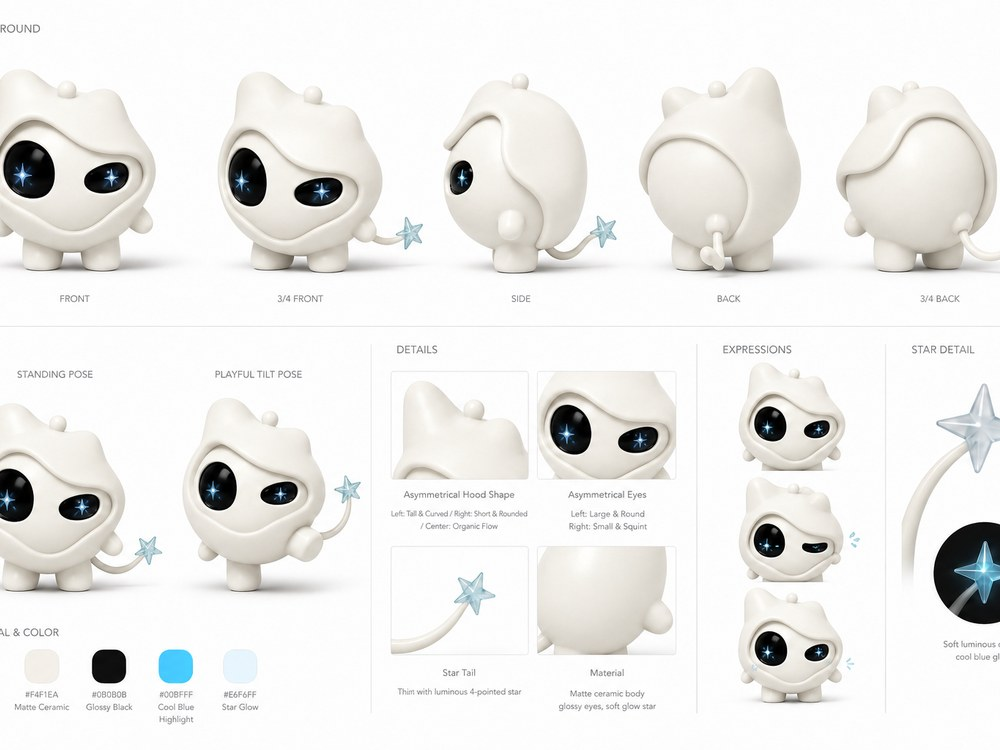
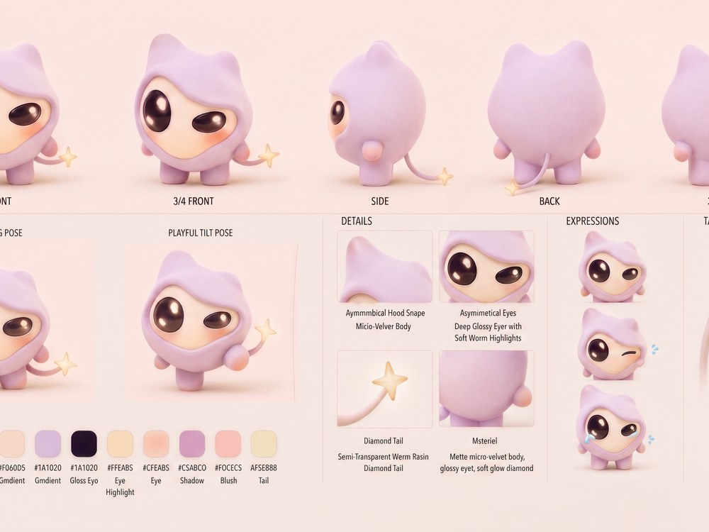

VP · CHROMA KEY · AI COMPOSITE
하몽 (夏夢)
판타지 단편 · VP / 크로마키 / AI 합성 하이브리드
러프컷 완료 · 2026.08 쇼케이스 예정
러프컷 · 2026.08 쇼케이스 버전 작업 중
01 현장


02 시스템
촬영 이틀이 사고 없이 끝나도록, 모든 부서가 같은 문서를 봤습니다.
문서 이미지를 클릭하면 원본 크기로 확인할 수 있습니다.






03 캐릭터 디자인 — 창작부터 AI 합성까지
‘귀여운 외계인’이라는 최소한의 방향만 주어진 상태에서, 성격·실루엣·표정·색을 직접 설계해 하나의 고유 캐릭터로 완성했습니다.

비대칭 눈 · 안테나 · 둥근 실루엣을 손그림으로 탐색

입체로 옮기며 뿔·다리 비율과 별 꼬리를 확정

턴어라운드 · 표정 · 재질 · 컬러 코드까지 시트로 고정

작품 미감(따뜻한 SF)에 맞춰 재질·색을 최종 결정
이 캐릭터를 AI 합성이 가능한 형태로 규격화하고, 캐릭터 디자인 → 클린 플레이트 → AI 합성의 흐름으로 영상에 구현했습니다.
현재 러프컷 편집 완료, 2026년 8월 완성 및 오프라인 쇼케이스 예정. 세계관을 영상에서 오프라인 경험으로 확장하는 과정을 진행 중입니다.